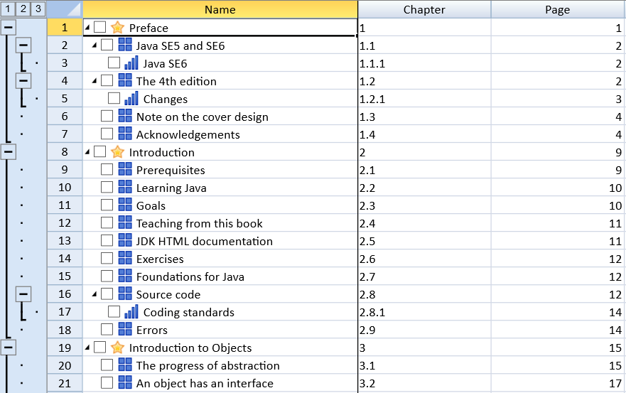

Outline columns in SpreadJS refers to indenting text in the columns to create a tree-like structure in a spreadsheet for better organization of data.
This feature is useful particularly when you want to add hierarchial relationships between rows and built-in expand and collapse user interface in a spreadsheet. Also, outlining columns can be of great help when you need to create project plan tasks and project plan sub-task hierarchy, financial statements and bills of material documents while working with large amounts of data lying in spreadsheets.
Users can outline columns in a worksheet while also adding check boxes and images along with collapse and expand icons.
The following image displays an outline column with collapse and expand icons, check boxes, images, and row outlines.

You can implement the collapse and expand icons in your worksheet by using the showRowOutline method. The levels in the tree structure correspond to the number of indentations.
You can also customize the images by level, show custom indicator, show checkbox and set maxlevel using outlineColumn.options.
This example shows how to indent the columns and add images and check boxes.
| JavaScript |
Copy Code
|
|---|---|
var rowCount = 38; var colCount = 10; activeSheet.setColumnCount(colCount); activeSheet.setRowCount(rowCount); activeSheet.setColumnWidth(0, 310); activeSheet.setColumnWidth(1, 150); activeSheet.setColumnWidth(2, 150); activeSheet.frozenColumnCount(1); activeSheet.setValue(0, 0, "Name", GC.Spread.Sheets.SheetArea.colHeader); activeSheet.setValue(0, 1, "Chapter", GC.Spread.Sheets.SheetArea.colHeader); activeSheet.setValue(0, 2, "Page", GC.Spread.Sheets.SheetArea.colHeader); var commands = [ {name: 'Preface', chapter: '1', page: 1, indent: 0}, {name: 'Java SE5 and SE6', chapter: '1.1', page: 2, indent: 1}, {name: 'Java SE6', chapter: '1.1.1', page: 2, indent: 2}, {name: 'The 4th edition', chapter: '1.2', page: 2, indent: 1}, {name: 'Changes', chapter: '1.2.1', page: 3, indent: 2}, {name: 'Note on the cover design', chapter: '1.3', page: 4, indent: 1}, {name: 'Acknowledgements', chapter: '1.4', page: 4, indent: 1}, {name: 'Introduction', chapter: '2', page: 9, indent: 0}, {name: 'Prerequisites', chapter: '2.1', page: 9, indent: 1}, {name: 'Learning Java', chapter: '2.2', page: 10, indent: 1}, {name: 'Goals', chapter: '2.3', page: 10, indent: 1}, {name: 'Teaching from this book', chapter: '2.4', page: 11, indent: 1}, {name: 'JDK HTML documentation', chapter: '2.5', page: 11, indent: 1}, {name: 'Exercises', chapter: '2.6', page: 12, indent: 1}, {name: 'Foundations for Java', chapter: '2.7', page: 12, indent: 1}, {name: 'Source code', chapter: '2.8', page: 12, indent: 1}, {name: 'Coding standards', chapter: '2.8.1', page: 14, indent: 2}, {name: 'Errors', chapter: '2.9', page: 14, indent: 1}, {name: 'Introduction to Objects', chapter: '3', page: 15, indent: 0}, {name: 'The progress of abstraction', chapter: '3.1', page: 15, indent: 1}, {name: 'An object has an interface', chapter: '3.2', page: 17, indent: 1}, {name: 'An object provides services', chapter: '3.3', page: 18, indent: 1}, {name: 'The hidden implementation', chapter: '3.4', page: 19, indent: 1}, {name: 'Reusing the implementation', chapter: '3.5', page: 20, indent: 1}, {name: 'Inheritance', chapter: '3.6', page: 21, indent: 1}, {name: 'Is-a vs. is-like-a relationships', chapter: '3.6.1', page: 24, indent: 2}, {name: 'Interchangeable objects with polymorphism', chapter: '3.7', page: 25, indent: 1}, {name: 'The singly rooted hierarchy', chapter: '3.8', page: 28, indent: 1}, {name: 'Containers', chapter: '3.9', page: 28, indent: 1}, {name: 'Parameterized types (Generics)', chapter: '3.10', page: 29, indent: 1}, {name: 'Object creation & lifetime', chapter: '3.11', page: 30, indent: 1}, {name: 'Exception handling: dealing with errors', chapter: '3.12', page: 31, indent: 1}, {name: 'Concurrent programming', chapter: '3.13', page: 32, indent: 1}, {name: 'Java and the Internet', chapter: '3.14', page: 33, indent: 1}, {name: 'What is the Web?', chapter: '3.14.1', page: 33, indent: 2}, {name: 'Client-side programming', chapter: '3.14.2', page: 34, indent: 2}, {name: 'Server-side programming', chapter: '3.14.3', page: 38, indent: 2}, {name: 'Summary', chapter: '3.15', page: 38, indent: 1}, ]; for (var r = 0; r < commands.length; r++) { activeSheet.setValue(r, 0, commands[r]['name']); activeSheet.setValue(r, 1, commands[r]['chapter']); activeSheet.setValue(r, 2, commands[r]['page']); activeSheet.getRange(r, 0, 1, 1).textIndent(commands[r].indent); } activeSheet.outlineColumn.options({ columnIndex: 0, showImage: true, showCheckBox: true, images: ['star2.png', 'box4.png', 'rating4.png'], maxLevel: 2 }); activeSheet.showRowOutline(true); spread.invalidateLayout(); spread.repaint(); |
|
This example adds and delete outlines in range grouping.
| JavaScript |
Copy Code
|
|---|---|
$("#button1").click(function () { var activeSheet = spread.getActiveSheet(); activeSheet.suspendPaint(); // Set Outline of row activeSheet.rowOutlines.group(0, 4); activeSheet.rowOutlines.group(0, 1); activeSheet.rowOutlines.group(2, 1); // Set Outline of column activeSheet.columnOutlines.group(0, 4); activeSheet.columnOutlines.group(0, 1); activeSheet.columnOutlines.group(2, 1); activeSheet.resumePaint(); }); $("#button2").click(function() { var activeSheet = spread.getActiveSheet(); activeSheet.suspendPaint(); // Remove Outline of row activeSheet.rowOutlines.ungroupRange(0, 4); activeSheet.rowOutlines.ungroupRange(0, 1); activeSheet.rowOutlines.ungroupRange(2, 1); // Remove Outline of column activeSheet.columnOutlines.ungroupRange(0, 4); activeSheet.columnOutlines.ungroupRange(0, 1); activeSheet.columnOutlines.ungroupRange(2, 1); activeSheet.resumePaint(); }); |
|
This example expands and collapses group outlines.
| JavaScript |
Copy Code
|
|---|---|
window.onload = function() { var spread = new GC.Spread.Sheets.Workbook(document.getElementById("ss"), {sheetCount:3}); var activeSheet = spread.getActiveSheet(); activeSheet.suspendPaint(); // Set Outline of row activeSheet.rowOutlines.group(0, 4); activeSheet.rowOutlines.group(0, 1); activeSheet.rowOutlines.group(2, 1); // Set Outline of column activeSheet.columnOutlines.group(0, 4); activeSheet.columnOutlines.group(0, 1); activeSheet.columnOutlines.group(2, 1); activeSheet.resumePaint(); $("#button1").click(function() { // Get the outline label count of the row var rgl = activeSheet.rowOutlines.getMaxLevel(); for(var index = 0; index <= rgl; index++) { // Expand Outline activeSheet.rowOutlines.expand(index, true); } // Get the outline label count of the column var cgl = activeSheet.columnOutlines.getMaxLevel(); var gi = []; var colCount = activeSheet.getColumnCount(); for(var index = 0, i = 0; index <= cgl; index++) { for(var col = 0; col < colCount; col++){ // Fetch group information of Outline var groupInfo = activeSheet.columnOutlines.find(col, index); if(groupInfo) { gi[i] = groupInfo; i++; col = groupInfo.end; } } } for(var i = 0; i < gi.length; i++) { // Expand outline activeSheet.columnOutlines.expandGroup(gi[i], true); } activeSheet.invalidateLayout(); activeSheet.repaint(); }); $("#button2").click(function() { // Get the outline row label count var rgl = activeSheet.rowOutlines.getMaxLevel(); for(var index = 0; index <= rgl; index++){ // Collapse outline activeSheet.rowOutlines.expand(index, false); } // Get the outline column label count var cgl = activeSheet.columnOutlines.getMaxLevel(); var gi = []; var colCount = activeSheet.getColumnCount(); for(var index = 0, i = 0; index <= cgl; index++) { for(var col = 0; col < colCount; col++) { // Fetch group information of Outline var groupInfo = activeSheet.columnOutlines.find(col, index); if(groupInfo) { gi[i] = groupInfo; i++; col = groupInfo.end; } } } for(var i = 0; i < gi.length; i++) { // Collapse Outline activeSheet.columnOutlines.expandGroup(gi[i], false); } activeSheet.invalidateLayout(); activeSheet.repaint(); }); } |
|
Note: This feature has the following limitations: